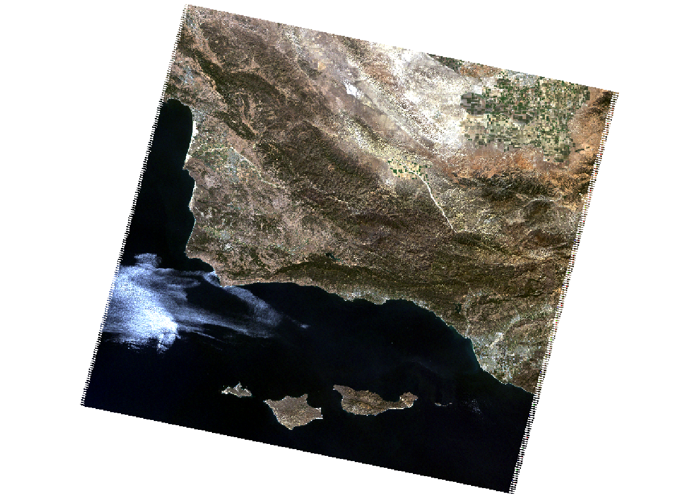
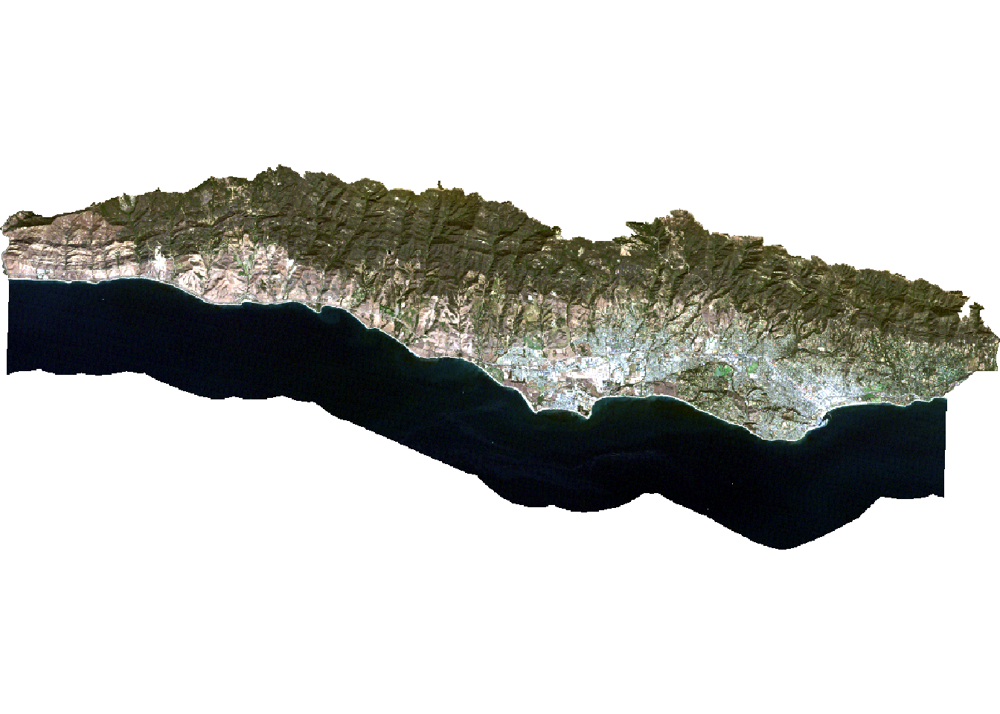
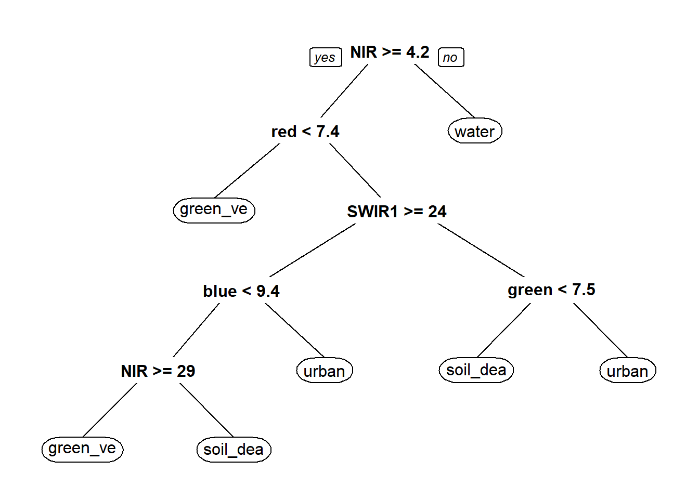
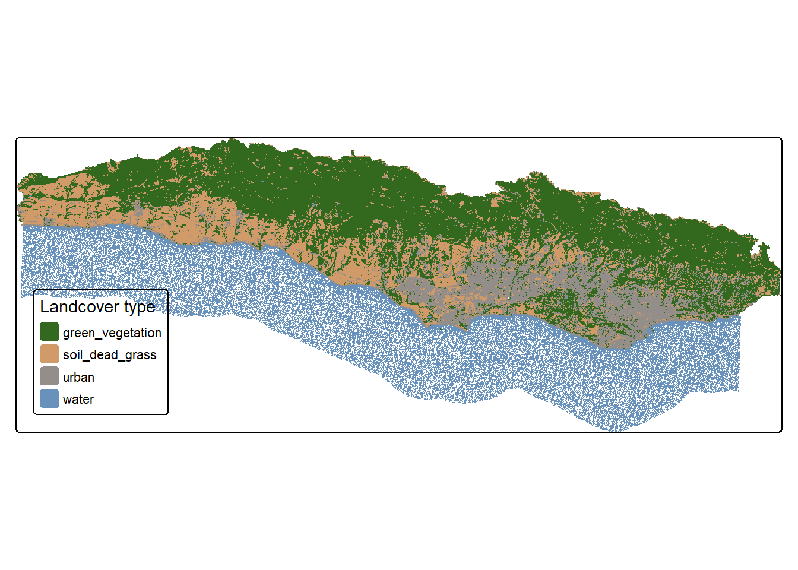

Land use and climate interact in sophisticated ways through both biophysical and biogeochemical feedbacks (Jia et. al 2022). Effects of climate change like global warming put natural ecosystems at risk and throw processes off balance. For example, it was reported that deforestation sometimes did not lead to a local increase in temperature but would cause temperature to rise in neighboring areas.
According to the American Geosciences Institute, LiDAR (Light Detection and Ranging) “is a remote sensing method that uses light in the form of a pulsed laser to measure ranges (variable distances to the Earth”(americangeosciences.org).
Objective
The importance behind this project is to test whether or not LiDAR is a worthy tool of geospatial analysis, especially in terms of the classification of land cover.
I will use a form of supervised classification, a decision tree classifier, which classifies pixels using a series of conditions based on values in spectral bands. These conditions/decisions are developed based on training data.
For this project specifically, I will generate a land cover classification for southern Santa Barbara County based on multi-spectral imagery on the location of four land cover types which include :
green vegetation
dry grass or soil
urban
water
Data
The data used for this project contains a subfolder landsat-data which contains one scene from September 25, 2007 and has bands 1,2,3,4,5, and 7.
The other data contained in this folder is the polygon representing southern Santa Barbara county SB_county_south.shp, adn the training sites training_data.shp.
Data Processing
Since we will be working with vector and raster data we will need to use both sf and terra packages.
In order to train our classification algorithm and visually represent the results, we will use the rpart and rpart.plot packages.
Warning: package 'rpart.plot' was built under R version 4.3.2
library(tmap)# setting current working directory using the here packagesetwd(here())# reading in shapefilesb_south_county <-st_read('data/SB_county_south.shp')
Reading layer `SB_county_south' from data source
`C:\Users\maria\Documents\MEDS\F23\223\assignments\eds-223-landcover-decision-tree\data\SB_county_south.shp'
using driver `ESRI Shapefile'
Simple feature collection with 1 feature and 18 fields
Geometry type: POLYGON
Dimension: XY
Bounding box: xmin: -120.2327 ymin: 34.33603 xmax: -119.5757 ymax: 34.53716
Geodetic CRS: NAD83
# reading in landsat data files filelist <-list.files('data/landsat-data/', full.names =TRUE)
Loading Landsat Data
In order to make a raster stack based on the 6 bands contained in the landsat_data file, I will use the rast function. In order to do so, we first need to make a list of the files I want inputted in the rast functions, and then I will update the names of the layers to match the spectral bands in order to plot a true color image.
I will use the plotRGB function to plot a true color image based on the generated raster landsat_sb_07. Making a Red-Green-Blue plot based on the three layers in the SpatRaster will generate a true color image.
# reading in the files and generating a raster stacklandsat_sb_07 <-rast(filelist)# updating the layer names to match bandnames(landsat_sb_07) <-c('blue','green','red','NIR','SWIR1','SWIR2')# plotting true color imageplotRGB(landsat_sb_07, r =3, g =2, b =1, stretch ='lin')

Study Area Data
In order to refine our analysis, we will transform the read in shape file which contains the bounds of Southern Santa Barbara County to match the CRS of the landsat_sb_07 data. I will also use the crop function to crop the landsat_sb_07 data to crop to the bounds of the Southern Santa Barbara county shapefile.
# changing the crs in order to match the crs of the landsat datasb_south_county <-st_transform(sb_south_county, crs =crs(landsat_sb_07))# crop landsat to extent of SB county shapefilelandsat_cropped <-crop(landsat_sb_07, sb_south_county)# masking the raster to southern Santa Barbara countylandsat_masked <-mask(landsat_cropped, sb_south_county)# removing unneeded intermediate variables from the environmentrm(landsat_sb_07, sb_south_county,landsat_cropped)
Converting the Landsat Values to Reflectance
In order to convert the values in the raster stack to represent reflectance values, I will remove incorrect values and apply scaling factors in order to convert to reflectance.
According to the USGS, the Landsat Collection 2 surface reflectance has a scale factor of 0.0000275 and an additional offset of -0.2 per pixel (usgs.gov) . This means that I will multiply the scale factor and add the additional offset to obtain reflectance values.
I first will reclassify the raster stack and then adjust values in the reclassified raster stack by the scale factor.
Valid ranges for this collection is 7,273-43,636 . Any values outside of this range will be classified as NA.
# saving reclassifying values as reclrecl <-matrix(c(-Inf, 7273, NA,43636, Inf, NA),ncol =3, byrow =TRUE)# reclassifying masked rasterstacklandsat<-classify(landsat_masked, rcl = recl)# adjusting the values within landsat based on scaling factorlandsat <- (landsat *0.0000275-0.2) *100# plotting true color image to check the resultsplotRGB(landsat, r =3, g =2, b =1, stretch ='lin')

Classifying Image
In order to extract reflectance values for training data, I will use the training_data shapefile to extract spectral values at each site in order to make a data frame containing land cover types and their corresponding spectral reflectance.
# read in and transform training datatraining_data <-st_read("data/trainingdata.shp") %>%st_transform(., crs =crs(landsat))
Reading layer `trainingdata' from data source
`C:\Users\maria\Documents\MEDS\F23\223\assignments\eds-223-landcover-decision-tree\data\trainingdata.shp'
using driver `ESRI Shapefile'
Simple feature collection with 40 features and 2 fields
Geometry type: POLYGON
Dimension: XY
Bounding box: xmin: 215539.2 ymin: 3808948 xmax: 259927.3 ymax: 3823134
Projected CRS: WGS 84 / UTM zone 11N
# extract reflectance values at training sitestraining_data_values <-extract(landsat, training_data, df =TRUE)# converting training data to a dataframetraining_data_attributes <- training_data %>%st_drop_geometry()# joining training data attributes withh extracted reflectance valuessb_training_data <-left_join(training_data_values, training_data_attributes,by =c("ID"="id")) %>%mutate(type =as.factor(type))
Training Decision Tree Classifier
Before I get into training the decision tree for land cover types, it is important to know what exactly is a decision tree.
By definition, a decision tree is a supervised learning technique, in which there is no fixed set of parameters available, and there is also no distribution available for use. The reason behind using this nonparametric method is so that it is easy to apply and understand.
The rpart function implements the CART algorithm, an algorithm which can be used for both classification and regression. This algorithm uses the Gini Index, which can be calculated using the Gini() function, available with the DescTools library.
The rpart function needs to know the model formula and training data desired and because I am performing a classification, I will set method = class . And in order to remove any pixels with associated NA values, I will use na.action = na.omit.
In order to understand how the decision tree will classify the pixels, I can plot the results. This decision tree is made up of a hierarchy of binary decisions. Each decision rule has 2 outcomes based on a conditional statement pertaining to values in each spectral band.
# establishing model formulasb_formula <- type~ red + green + blue + NIR + SWIR1 + SWIR2# training decision treesb_decision_tree <-rpart(formula = sb_formula,data = sb_training_data,method ='class',na.action = na.omit)#plotting decision treeprp(sb_decision_tree)

Application of Decision Tree
Now that I have generated the decision tree, I can now apply it to the entire image. Using the terra::predict() function, I will apply the model to our data. In order for this to work properly, each name of the layers need to match the column names of the predictors used to generate the decision tree. The predict() function will return a raster layer with integer values which correspond to the factor levels in the training data.
# classifying image based on decision treesb_classification <-predict(landsat, sb_decision_tree, type ='class', na.rm =TRUE)# printing the different levels of training datalevels(sb_training_data$type)
SpatRaster object downsampled to 621 by 1612 cells.

Conclusion
In conclusion, reclassifying an image to help predict land cover type is a very useful tool to help record whether or not it changes over time. The map generated above depicts an accurate image, and over time, change can be denoted.
Works Cited
“How Do I Use a Scale Factor with Landsat Level-2 Science Products?” How Do I Use a Scale Factor with Landsat Level-2 Science Products? | U.S. Geological Survey, USGS, www.usgs.gov/faqs/how-do-i-use-a-scale-factor-landsat-level-2-science-products#:~:text=Landsat%20Collection%202%20surface%20temperature,the%20scale%20factor%20is%20applied.
“What Is Lidar and What Is It Used For?” American Geosciences Institute, 2 Nov. 2020, www.americangeosciences.org/critical-issues/faq/what-lidar-and-what-it-used#:~:text=LIDAR%20(sometimes%20also%20written%20as,and%20watershed%20and%20river%20surveys.